最全Pycharm教程（43）——Pycharm扩展功能之UML类图使用
1、什么是UML
UML类图能够快速检查代码结构。
2、主题
UML类图在Pycharm中的用法。
3、准备工作
（1）Pycharm版本为2.7或更高
（2）安装Python解释器
（3）UML插件以及UML类图插件安装并能正常使用
4、准备一个例子
创建一个Animals模块以及 Mammal.py文件（Alt+Insert→Python Package, Python File），输入以下代码：
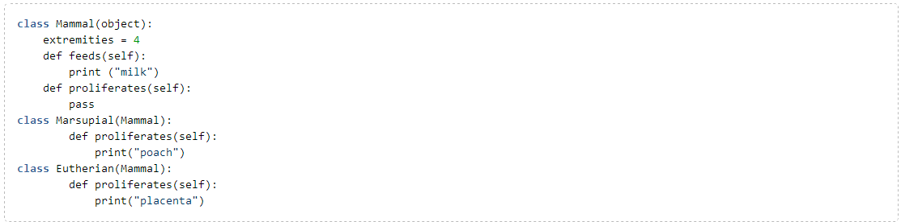
继续向其中添加更多类，例如Carnivore和Herbivore。
5、通过UML类图浏览程序结构
假设我们想查看mammals的派生结构，在Project tool window窗口中，右击Mammal.py，指向快捷菜单中的 Diagrams节点，选择如下可用命令：
（1）Show Diagram：在当前编辑选项卡内打开UML类图
（2）Show Diagram Popup：在单独窗口中显示UML类图
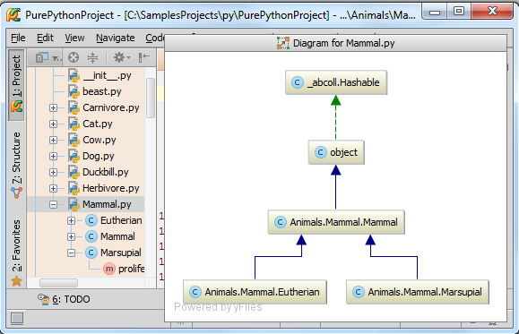
选择mammals中的一个类（例如marsupials），用UML类图查看它：
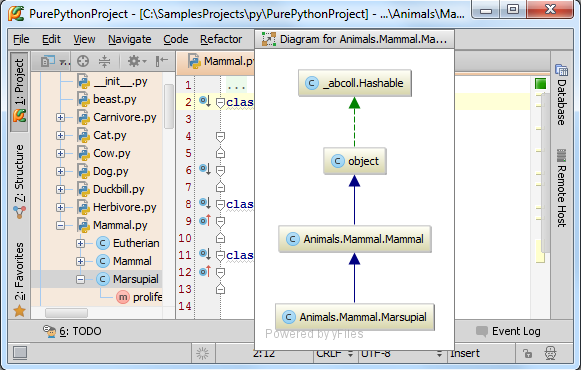
也可以使用快捷键Ctrl+Alt+U（当前窗口）或Ctrl+Alt+Shift+ U（独立窗口）。
单击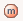和 按钮查看详细信息：
按钮查看详细信息：

也可以使用快捷菜单：
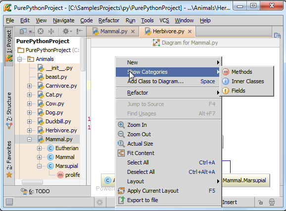
更多工具栏及快捷菜单的功能参见Class Diagram Toolbar and Context Menu页。
接下来向其中加入注释。选择想要注释的元素，按下Alt+Insert：
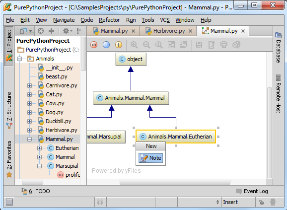
回车，输入注释内容：
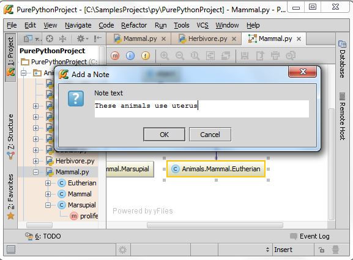
单击OK，注释添加完毕：
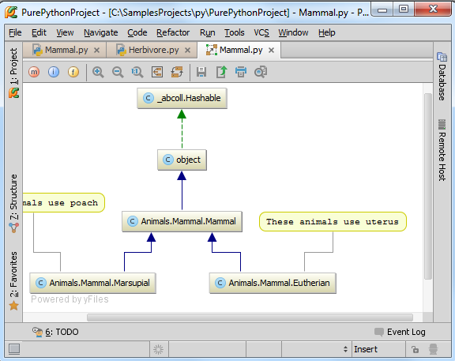
6、结构图与源码间导航
如何从结构图跳转到响应的源码位置？
在结构图中选择一个节点元素，按下F4或者右键快捷菜单选择Jump to Source命令：
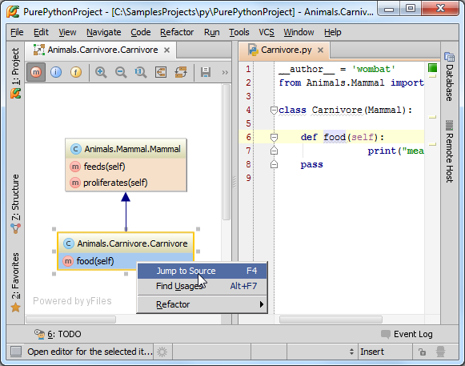
7、UML结构图作用
8、查找所有引用
在结构图中选择一个节点元素，右击，在快捷菜单中选择Find Usages，或者使用Alt+F7快捷键：
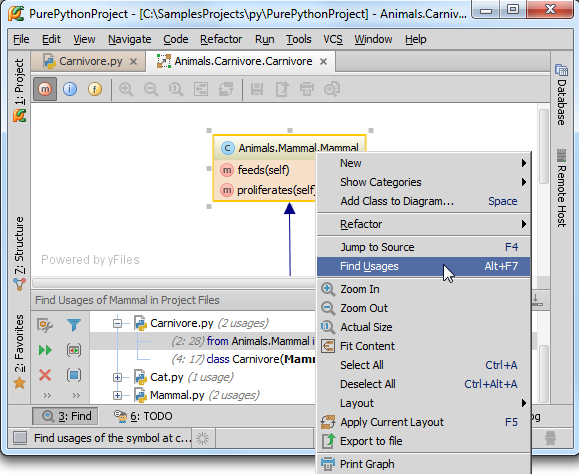
9、重构
可以直接在类图中对类或者成员就行重构（重命名等）。
在类图中右击待修改的节点，指向Refactor命令，在子菜单中选择对应命令。
例如你希望对一个类进行重命名，需要在类图中选中它，然后选择Refactor→Rename快捷菜单命令或者按下Shift+F6：
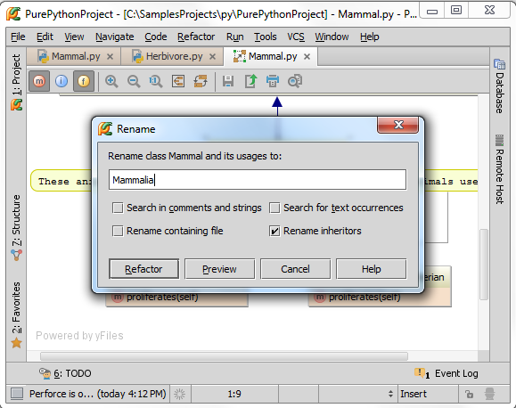
10、向模型中添加元素
按下Space，在弹出的窗口中输入类型和名称：
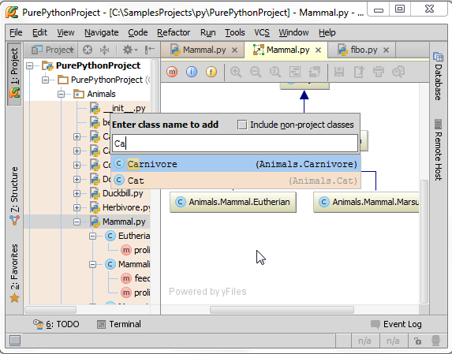
添加Carnivore：
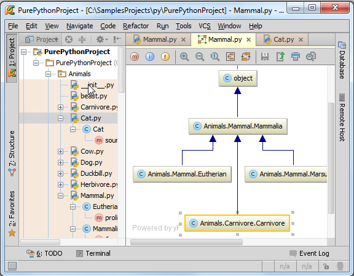
接下来手动创建更多类，如 Carnivore或Herbivore，指定mammal类型。例如Cow继承了Herbivore 和Eutherian。Tiger继承了Carnovire 和Eutherian。 Duckbill 继承了Herbivore 和Marsupial，TasmanianDevil继承了Carnivore 和Marsupial：
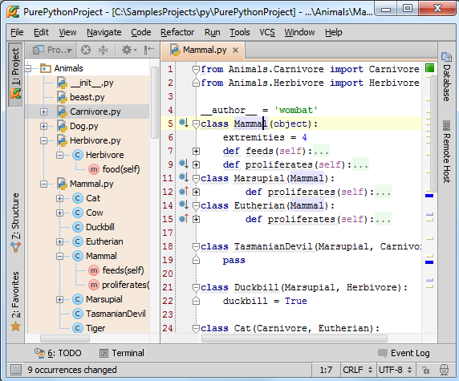
按下Space，将这些类加入类图：
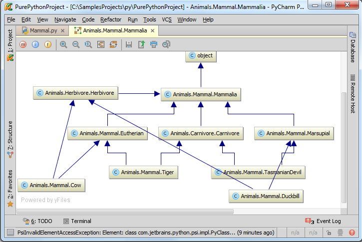
单击按钮，优化显示风格：
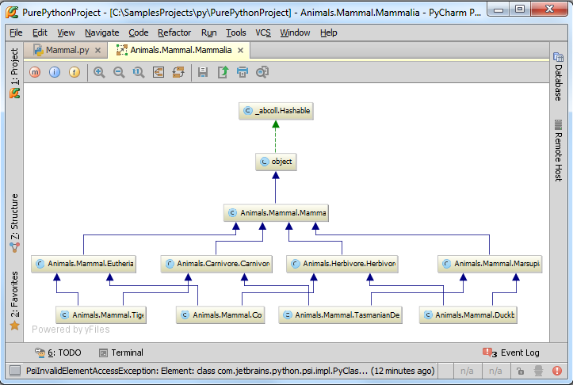
11、从类图中移除元素
在类图中选中一个元素，Delete：
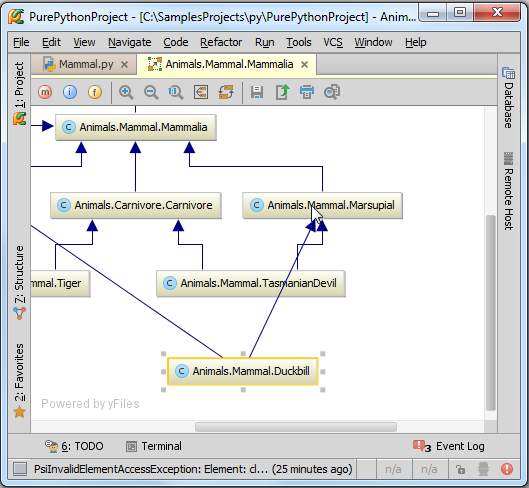
此时删除的类仍存在于源码中，只是在类图中不可见：

12、通过类图浏览代码更改
推荐使用Ctrl+Alt+Shift+D快捷键，或者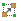按钮。